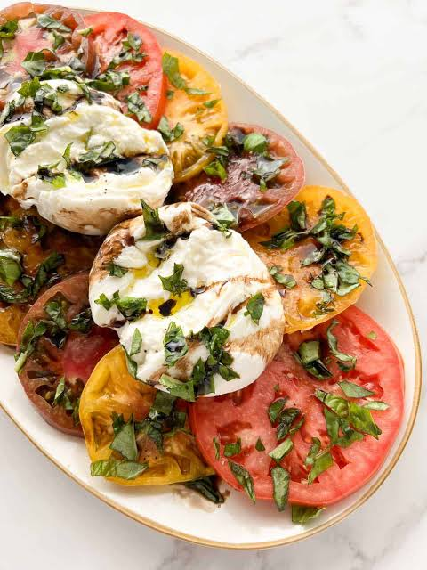

Home
Caprese Burrata

A simple salad for an unexperienced eye, but for someone who knows the pleasures of food its the combination of all that is dear to italy in one salad, tomatoes and cheese!
Ingredients
- Tomatoes
- Burrata
- Basil
- Olive oil
- Balsamic vinegar
- Salt
- Black pepper
Steps
- Cut large tomatoes into 1/3-inch thick slices, or halve cherry tomatoes. Arrange them on a serving platter.
- Place the burrata ball or balls in the center of the tomatoes. Gently tear or cut the top open so the creamy center spills out slightly.
- Scatter the torn fresh basil leaves over the tomatoes and cheese.
- Drizzle evenly with extra-virgin olive oil and balsamic vinegar. Finish with a generous pinch of flaky sea salt and black pepper. Serve immediately.
- And now you can enjoy this fantastic plate coming from south italy, remember to take a step back and enjoy every bite!